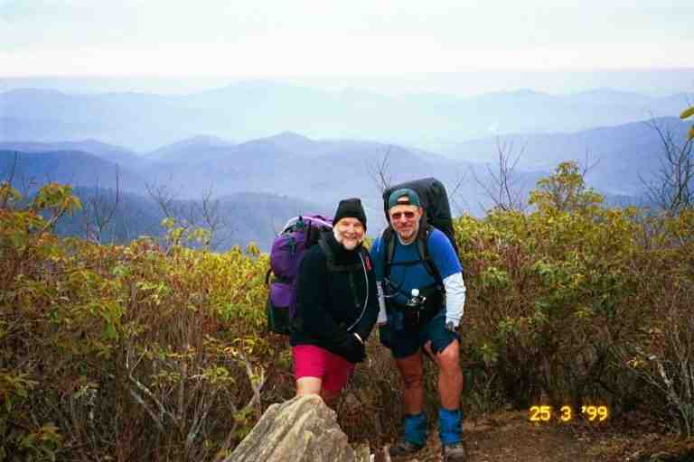
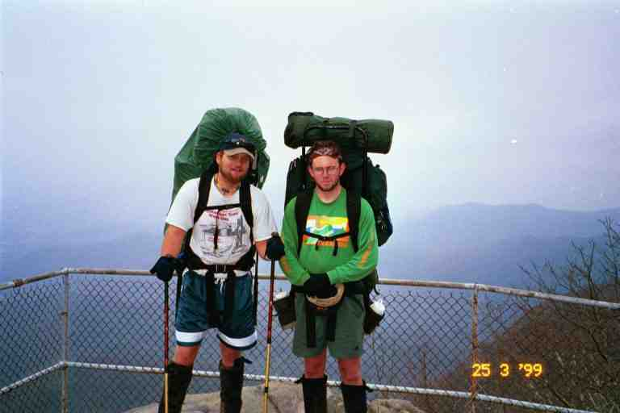
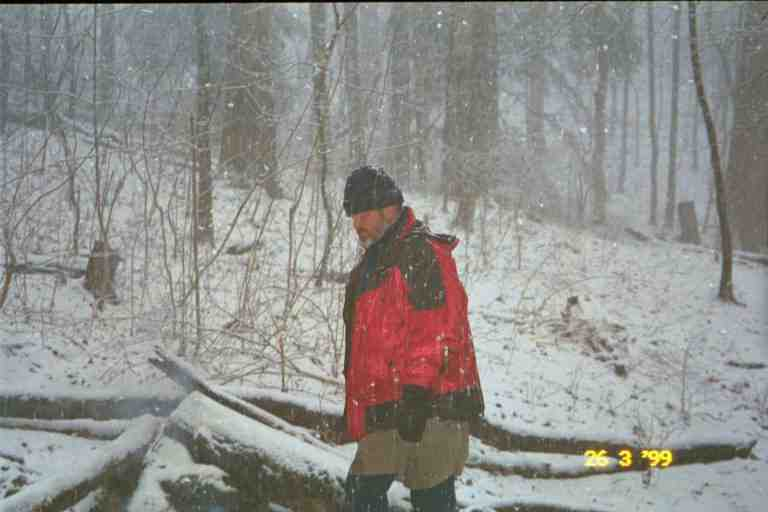

We got up early on March 24, hoping to do a bigger day than usual: 12.5 miles to Carter Gap shelter. Everyone was sleeping with their heads towards the back wall and their feet near the edge of the shelter. On cold nights most hikers wear wool hats to conserve body heat and also tie their sleeping bag hoods tightly around their head so only a portion of their face is exposed. Thru hikers tend to crowd much more people into a shelter than is suggested, especially in inclement weather. As a result, looking into a shelter full of hikers bundled in their bags is like looking at a bunch of logs lying next to each other.
Each person's space is the narrow strip, the width of their sleeping pad, extending from the back wall to the front of the shelter. Small personal items such as flashlights, toiletries, writing material and some clothes is kept near their heads. A rolled jacket or a stuff sac full of clothes serves as a pillow. Boots are placed near the feet or under the front of the shelter. Backpacks are hung inside on nails or wooden hooks provided on the side or back walls, or they dangle across the front of the shelter hung from nails in the overhang of the roof. Food bags are hung from the ceiling or the overhang on cords called mouse hooks.
The close quarters means that the shelter dwellers have a good chance of being awakened by fellow hikers getting up for calls of nature and by early risers. Because of this and because of the snoring and the mice, many hikers prefer to use their tents. (More about snoring and mice another time.)
We rooted quietly around in the shelter trying to get all our stuff together and packed. We managed to wake some people up.
The morning was damp and cold and windy. The day started with some fairly easy walking with slight rises and drops in elevation. Spring was a long way off, so the trees were bare allowing the wind to get at us and chill us a little. As we crossed from one side of a hill to the other, we would go in and out of the wind. We wore our fleece and outer shell to keep us warm and dry. What to wear in rain is always a concern for hikers. Rain gear will keep the rain out but will likely keep in the sweat. In warm weather, many forego the rain gear while hiking, but this can be a problem in cooler weather. Our outer shells are made of a breathable material allowing sweat to escape and also have zippered vents under the arms. As usual, the exercise was building up more sweat than the clothing could handle so I kept the front of my jacket unzipped and slightly open.
We first came to a trail called Chunky Gal Trail. We have no idea of the origin of the name. After crossing a forest service road (USFS 71) at the four mile mark, we started up Standing Indian Mountain. At this point the trail was wide, likely an old cart trail, and we were able to walk side by side. The trail rose slowly but surely, hugging the side of the mountain. After walking for a mile up the mountain (rise of 300 feet), we came to Standing Indian Shelter. We decided to go to the shelter to get out of the elements and have something warm. We got deep into the shelter and I started up my stove and boiled water and made some hot chocolate. The drink helped us a little but we were colder than on the trail because we were not moving and because the shelter was on a little rise and the front faced into the wind.
While we were there, a middle aged woman arrived, looked at us and addressed us as MA and PA. I did not recall seeing her before. She explained that she was Mona and that she recognised us from the photo that I had sent her. Then I remembered. Mona is one of 28 thru-hikers who are placing their trail journals online at www.trailplace.com. I had sent email messages to many of them before leaving home, wishing them luck and expressing a hope that we would meet on the trail. I emailed photos to all who replied. Mona would eventually become BLUET because it was the first spring flower she saw on the trail.
Then a middle aged man and woman arrived. It was VELVET HAMMER and KINNICKINIC who were travelling with BLUET. I also knew KINNICKINIC from the online journals. The three called themselves the GREYPACK. They were only carrying small day packs because they were being slack-packed in a van by JUNKER.
Slack-packing refers to hiking without a back pack. The opportunity can arise when someone with a vehicle agrees to bring your bag to a road crossing further up the trail or if someone ferries you back and forth from the trail. The members of the GREYPACK were paying JUNKER to slack pack them the entire way. JUNKER is a former thru hiker who knows the trail well. He would plan their day for them, drop them off and pick them up and find accommodations. He had maps of all the local roads, forest service roads, etc. and knew where the trail crossed them. As a result, there would only be a few sections where the GREYPACK would have to carry a full pack and sleep on the trail. Although they were northbound hikers, they began their hike by hiking south from NOC to Springer Mountain (134 miles). Junker would then drive them back to NOC to start hiking north. This is called flip-flopping.
KINNICKINIC did not look too good. She seemed to be cold and was walking wrapped in a space blanket. I offered her the rest of my hot water. She accepted gladly but strangely she poured it into her nearly empty water bottle rather than drink it. I never understood why she did this and I was even more mystified when I read in her trail journal how grateful she was. She then told us that she had lost her food. Luckily they would be meeting up with Junker later that morning. Just before leaving, BADGER and SUNDOG arrived.
---------------------- Later on in their hike, the GREYPACK would all go to VELVET HAMMER's home in South Carolina for a meal and a night's rest. The next morning he told them he would not be going back on the trail. DUKE would later join the group and KINNICKINIC would leave the group after a falling out. -----------------------
Beyond the shelter, the trail rose 800 feet over a distance of 1.5 miles to the summit of Standing Indian Mountain. Later in the day we walked a for a while with GREYLOX and PILGRIM who were also on the way to Carter Gap. GREYLOX and I had a lengthy discussion about languages and local variations. I spoke about French and he discussed Hebrew.. Attached picture of PILGRIM and GREYLOX taken the next day.

There is a brand new shelter at Carter Gap, much similar to the one at Muskrat Creek. Unfortunately, EAGLE, FALCON, BADGER, SUNDOG and a number of others had taken all the available space. However, the old shelter had not been removed so we decided to stay there. While the new shelter was in a clearing right on the trail, the old one was in a beautiful little wooded area just off the trail. It was a very old structure with a sagging floor that was built only a few inches off the ground. Usually shelter floors are one to three feet off the ground. GREYLOX and a father and son team of section hikers were already occupying the shelter while PILGRIM had set up his tent nearby. Cords had been strung in and around the shelter and an assortment of equipment and clothing was hung to dry. GREYLOX ate only kosher food and he told us about a nutritious paste that he had created and which he ate during the day. I cannot recall all the ingredients but it did not seem too appetizing and did not seem worth the effort that he had to go through to make it. I would stick to my peanut butter.
EAGLE told us that KAYBEK had gone ahead another five miles to Mooney Gap. There was a rumour of a beer and pizza party being set up by a trail angel. Later on, MICHIGAN MAN and his hiking partner ELF arrived. They were also on their way to the pizza. We found out the next night that KAYBEK and 11 others made it but that MICHIGAN MAN and ELF did not. Those who made it had 15 pizzas and lots of beer to split between them.
The next morning, the weather was cool and threatening. We would be doing Albert Mountain and MA was apprehensive. She had read in Bryson's book about the narrow ledges just before Albert Mountain and the ruggedness of the mountain. Bryson had reached this area in a snow storm, nearly fell off the icy ledge and got lost when he had to contour the mountain because of the weather.
We arrived at the base of the mountain and had very little trouble walking along the narrow ledge, as it was only a few feet long. The ascent up the top part of the mountain was very strenuous. The final ascent was 600 feet in a distance of less than 0.2 miles. It was one of the few times that we climbed with little walking. We had to climb in a winding narrow passage, pulling ourselves up from rock to rock. It was a difficult climb but not really dangerous. There were only a few times that we were in precarious positions. The real challenge was accomplishing it with our heavy packs and our hiking poles. I had my poles dangling by their straps from my wrists. They would sometimes get in the way of my legs as I pulled myself up. Maybe we should have collapsed them and tied them to our packs. I lead the way, and PILGRIM followed right behind MA. She wanted to let him pass but he declined, saying she was doing great. In retrospect, he was likely looking out for her. He congratulated her profusely when we reached the top.
At the summit, there was a tower we could climb but we were not tempted because it was misty and cold. We sat away from the wind and had a snack. As it was close to noon hour we had our big snack consisting of pita bread smothered with peanut butter and then covered with honey from a squeeze bottle that I had purchased in Hiawassee. I found that the honey made the peanut butter easier to swallow and added more energy.
After PILGRIM and GREYLOX left, BADGER and SUNDOG appeared. I recall that it was a little cool, especially in the wind on the summit. In the attached picture taken there, you will note that BADGER was only wearing a short sleeved tee-shirt but had a pack cover to protect his gear from the rain. Many hikers dressed very lightly because hiking generates lots of heat. Usually they would put on a fleece when they stopped.

We had seen quite a bit of these two young men during the last week or so. They usually slept in, but they would catch up to us during the day. I recall a few mornings when we would be walking in the damp misty woods and would hear a voice behind us. We would look back to see the two of them through the trees. BADGER in the front with a big smile on his face, walking with a bounce in his step, raising his knees high as he went, pumping his arms and singing at the top of his voice a song he had just composed. Drafting right on his heels was SUNDOG, who was very quiet and seemed pleased just to be along for the ride. We would usually stop and have a break with them and have great conversations. These were feel good moments.
In the late afternoon we passed the 100 mile mark, as we hiked along a two and a half foot wide trail cut into the side of a hill. This was the most common kind of trail in the south. You would have the hill sloping up on one side of you and sloping down on your other side. In March and April, we could see far into the woods because of the lack of vegetation and could spot the up coming shelters in the distance. They were generally a little below the trail close to a water source. On this day as we looked down the hill to our left, we saw a number of people at Rock Gap shelter. EAGLE yelled hi to us and MA waved back and promptly fell on her face. When you trip carrying a heavy backpack you have a lot of momentum and you can easily find yourself on the ground. MA escaped without damage. We were proud of our day, the second 12 mile day in a row, and it included Albert Mountain.
We joined EAGLE, FALCON and KAYBEK at the shelter for the night. It was a nice shelter with a covered picnic table on the side. GRUBBY came by not long after but was only passing through, preferring to do three more miles to US 64 to hitch a ride to Franklin NC. Then BULL bulled his way into camp. A very tall, soured faced man in his sixties, he arrived complaining about the trail being too crowded this year and then proceeded to air a few other complaints. He asked about the road that we could see just down the hill behind the shelter and I confirmed that it was the road to get to Rainbow Springs Campground. He promptly left and bushwhacked his way down the hill to the road. We later found out that he has attempted the hike a number of times and this was the furthest he had ever got. He was very disagreeable and talked down to everyone since he considered himself an expert hiker. We never saw him again.
The next morning was cool and a light rain was falling. We had a warm comforting breakfast. EAGLE, like so many who re-supplied with mail drops, had too much food. He was expecting a mail drop in Franklin this day and therefore offered to share the remainder of his oatmeal and dried blueberries with the rest of us. KAYBEK mentioned that it would also be nice if we had some honey to add. I supplied the honey and some of our own oatmeal. We had a wonderful meal.
As we were sitting enjoying breakfast, the rain changed to snow. The flakes were wet and large and fell slowly to the ground where they immediately melted. We all made our preparations to leave and the snow continued. Decisions had to be made. The snow was falling a little faster, was being driven by a little wind and was now sticking to the ground. The other three decided to leave and hike to US 64 to hitch into Franklin.
MA and I were unsure what to do. We had no need to get to Franklin as we had at least 4 days of food, enough to get us to NOC. We did not want to try to hike on to the next shelter, which was 7 miles and a good climb away, in case the storm got worse. As it was still pretty early in the morning, we decided to stick around and see if the storm would clear. After the others left, I started a fire in the fire pit in case we needed the heat. As I worked at the fire, the snow changed back to rain and I felt a little relieved. This was short lived, however, as the snow returned with even bigger flakes. I kept the fire going. Soon the ground was covered with snow. (See the attached picture of me in front of the fire.)

It soon became apparent that we were in for a good storm. We discussed our options. If we stayed here, we could be stuck in a major snow storm by ourselves. If the wind picked up, we did not know how we would cope in the shelter. Fortunately it was not too cold but on the other hand, the snow was very wet and that could be a problem for our gear. Also, we did not want to go out in this storm. There was only one other option, but we were trying to avoid it: Rainbow Spring Campground.
Let me explain about Rainbow Spring Campground. As I mentioned earlier, in "A walk in the Woods", Bill Bryson describes being caught in a snow storm in this same area. Bryson and his friend ended up at Rainbow Spring to get away from the storm. He wrote of a draughty bunk house, gross bunk beds, the terrible chilli and the disagreeable owners. His description convinced hikers to avoid the place. Now here we were in the same situation as Bryson and Rainbow Spring was only one mile down the road that we could see from the back of the shelter.
We reluctantly decided that it would be safer to be indoors during the storm. We put the covers on our packs and headed out. The road was only 0.1 mile down the trail from the shelter. At the road we turned left because Rainbow Spring was 1 mile to the west of the trail. The wide road winded its way down the mountain. After some time we started to be concerned. The snow was now a few inches deep, we had seen no one, there were no buildings and there were no tire tracks. We kept thinking that our destination was just around the next curve and there were many curves. We were reluctant to stop because we were anxious to arrive.
After about 45 minutes, it seemed clear that we had likely walked more than a mile. We stopped and removed our packs. With the snow falling all around us, I took off the pack cover, and dug into the lid of my pack for the plastic bag containing our maps and guide books. The data book indicated that we had taken a road at Rock Gap whereas we should have gone another half mile further up the trail to Wallace Gap to take Old US 64 in order to get to Rainbow Springs. We ate some snacks and headed back up the road. The snow was falling hard, our footprints had disappeared and we were now walking uphill. It seemed like we would never get back to where we started. We were covered in snow. I have often wondered about BULL, who I had sent down this same road the night before.
When we got back to Rock Gap, we immediately got on the trail and followed footprints heading north. The going was slow as we could not see what was underfoot. Here again the trail was dug into the side of a hill and we had to be careful not to lose our footing and slide down. The trail climbed gradually and finally came out of the woods at the junction of the road we had been on and Old US 64. The footprints crossed the road and went up a slope into the woods, continuing on the AT. We spotted a small weathered wooden sign on a tree across the road with the letters RSC and 1M and an arrow pointing up the road to the left. We were tired from our long walk, so we turned left.